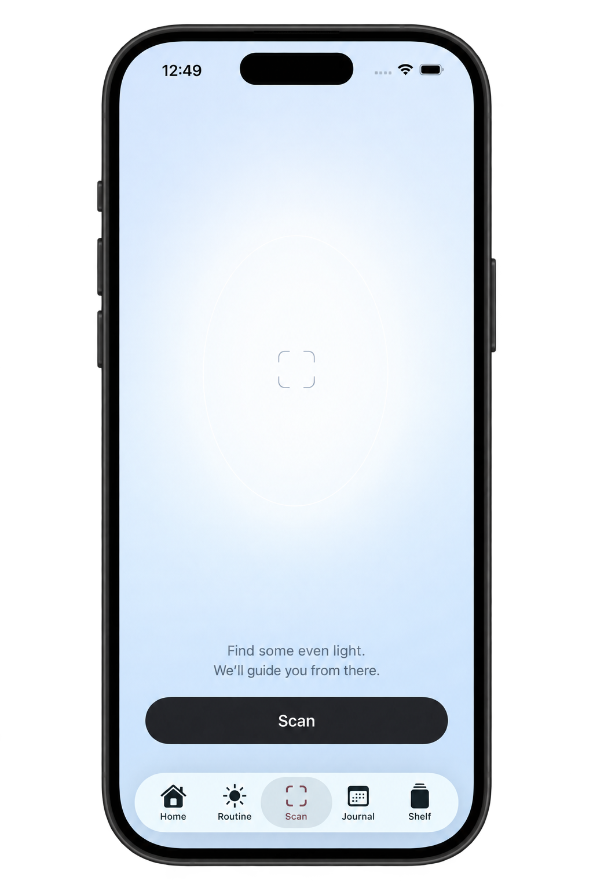

skincare fridge
your products on visual shelves, with photos, favorites and collections
personal project · in development
An iOS app for keeping track of the skincare products you own. Scan a product, review its ingredients, compare it with your routine, and save it to your skincare fridge.

picking skincare is exhausting. what do i own? what worked? what should i buy next?
one app to scan, track and compare my products, with ai to explain the ingredients.
your products on visual shelves, with photos, favorites and collections
barcode, packaging or ingredient label, read on-device with apple vision
see ingredient overlap and avoid-list matches before you buy
morning and evening routines, open dates and “use first” reminders
type “fragrance-free moisturizer” and it gets it, even offline
gemini explains what your ingredients do, checked against the real list
╭───────────────────────────╮
│ iphone app │ swift · swiftui · swiftdata
│ apple vision scans here │ works offline, no account
╰────────────┬──────────────╯
│
▼
╭───────────────────────────╮ ╭──────────────────────╮
│ node.js backend │ ───▶ │ supabase │
│ cleans + dedupes data │ │ postgres · auth │
╰────────────┬──────────────╯ │ private backups │
│ ╰──────────────────────╯
▼
╭───────────────────────────╮
│ google gemini │ key stays on the server
│ explains ingredients │ rate limited · cached
╰───────────────────────────╯
in development